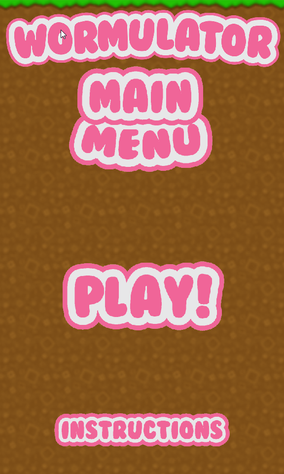

Past ProjectsThroughout my time at Penn State I have gained extensive experience working on many different java applications both in groups and on my own. These projects have ranged from simple console applications to extensive GUI interfaces, and even a simple game. In addition to my work with Java I have created a couple different projects in C++, HTML and Stencyl. |
|
rats vs spiders |
Java ProjectsDuring my time at Penn State I have worked on many different Java applications but there are a couple that I am more proud of since I think they better display my skills as a programmer. The first project is a sign in application prototype that I have been working on for my IST 361 class. I worked on this application all semester and it was a valuable learning experience for me since it made me more aware of time constraints, and my ability to accurately estimate how long a project will take. The other java project that I want to talk about is a game I made for one of my IST courses. It is a simple game called rats vs spiders, where you play as a rat going around trying to eat spiders before they grow too big and eat you. It is a very simple game with simple art, but I had a lot of fun working on it since it was my first game. |
|  |
Other ProjectsI haven’t really done anything extraordinary with C++ but I have used it for a couple projects in the past, since I find the language fun to use. One of those projects was for my English 202 class where I provided an instruction set on how to write a simple calculator that adds two integers. I also made a short game in stencyl that you can play here for my game design course. This was the first game that I worked on by myself. I also helped create a group game for the course called wormulator, which you can see a screenshot of to the left, and was made in game maker studio. The last project I want to talk about it this website. I wrote all of the code for this website by hand so I think it is a good example of my skill with HTML. |